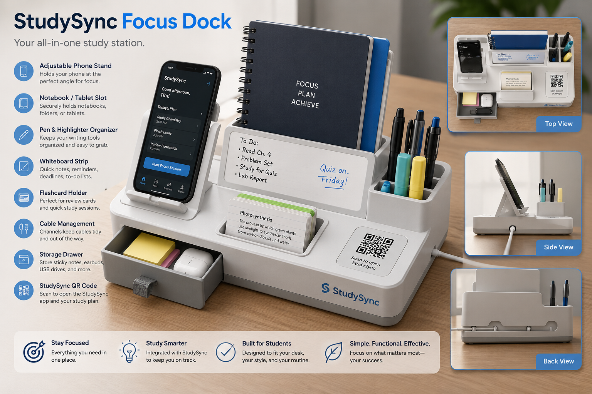

Physical Product MVP
Organize your desk. Focus your plan.
StudySync Focus Dock is a low-fidelity physical product MVP that extends the StudySync planner into a student's actual workspace. The product organizes phones, notebooks, pens, flashcards, cables, reminders, and app access in one compact study station.
4.6/5Usefulness rating
80%Likely to purchase
100%Helped organize

Product Features
Built around real study habits
The Focus Dock is designed for students who need a simple place to keep core study materials visible, accessible, and connected to their weekly plan.
Survey Validation
What early feedback showed
Initial feedback from 10 responses showed strong interest in a student-focused organizer that pairs physical workspace structure with StudySync's digital planning tools.
70%College students
60%Definitely improves organization
80%Likely to purchase
$25–35Most common price range
4.6/5Average usefulness
Your Focus Dock Concept
🧩
Your recommended product setup will appear here after you submit the concept test.